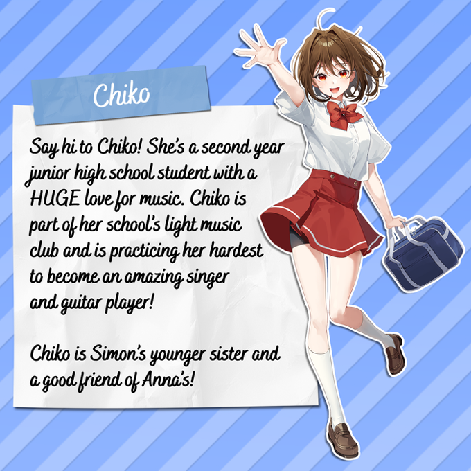
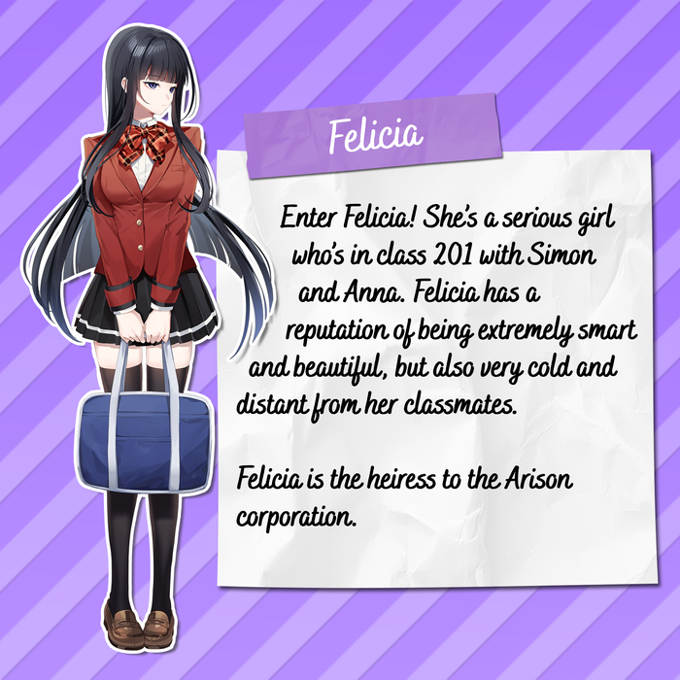
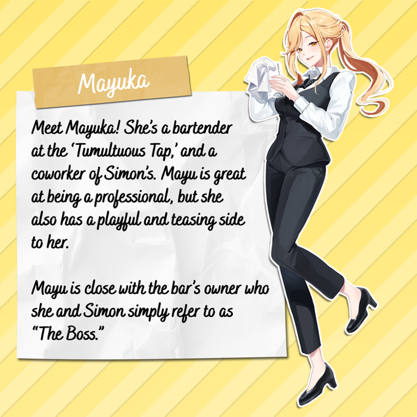

Characters
Akemi
The owner of the youtube channel "Radish ASMR" and the character who everything ties back to.
Annabelle
A component of Akemi who is the most important character within the lore. Appears in both Radish ASMR along with Kimochii Classroom.

Chiko
Simon's younger sister and close friend of Annabelle. Infatuated with music and idols.

Felicia
A mysterious girl in Annabelle and Simon's class. Often cold and aloof.

Mayuka
Works along Simon and Boss at the "Tumultuous Tap". Cares for Simon.
Simon
The main protagonist of Kimochii Classroom. Suspected to be the listener in Akemi's videos.
XXXXX
A component of Akemi who is thought to be either Chiko or Simon.

Sakura
A component of Akemi who holds immense knowledge hidden behind a cloud of foggy memory.